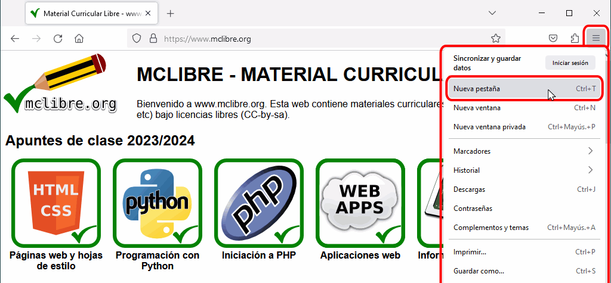
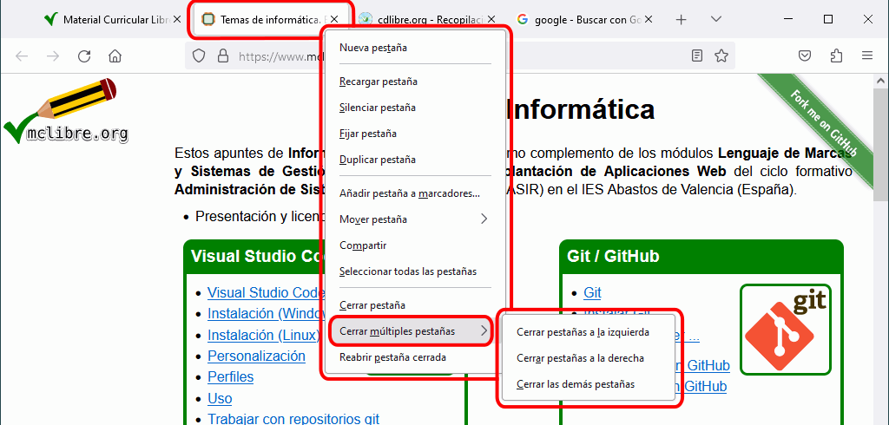
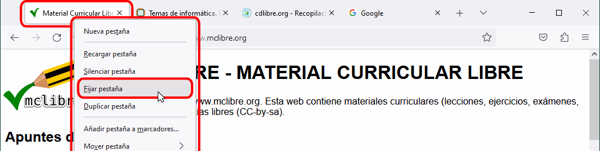
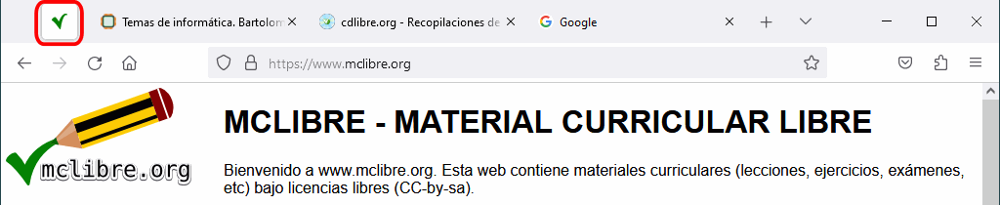
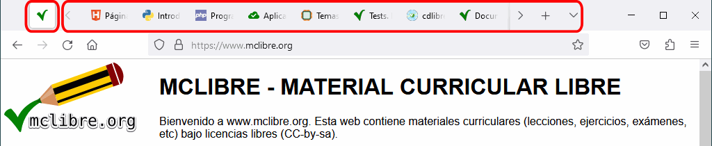

Las pestañas permiten visualizar varias páginas en la misma ventana del navegador, reduciendo el número de ventanas abiertas.
El título de página se muestra en la pestaña.
La barra de dirección muestra la URL de la página que estamos visualizando.
Al situar el cursor sobre una pestaña, se muestra el título completo de la página en un cuadro de texto emergente.
Abrir una nueva pestaña
Se puede abrir una nueva pestaña:
pulsando la combinación de teclas Ctrl+t.
haciendo clic en el signo + situado a la derecha de la última pestaña abierta:
haciendo clic en el menú "hamburguesa" situado en el extremo derecho de la ventana y eligiendo la opción "Nueva pestaña":
La nueva pestaña se abre a la derecha de la última pestaña abierta:

Cambiar de pestaña
Se puede cambiar de pestaña:
haciendo clic en la pestaña.
pulsando la combinación de teclas Ctrl+AvPág o Ctrl+Tab (para pasar a la pestaña siguiente) o Ctrl+RePág o Ctrl+Mayús+Tab (para pasar a la pestaña anterior).
Las combinaciones de teclas Ctrl+1, Ctrl+2, Ctrl+3, etc. nos llevan directamente a la primera, segunda, tercera, etc. pestaña. La combinación Ctrl+9 nos lleva directamente a la última pestaña.
Cerrar una pestaña
Se puede cerrar una pestaña:
haciendo clic en el aspa situada en la parte derecha de la pestaña.
pulsando la combinación de teclas Ctrl+w o Ctrl+F4.
Al cerrar una pestaña, el navegador muestra la pestaña siguiente (o la anterior si hemos cerrado la última pestaña):
Cerrar otras pestañas
Se pueden cerrar el resto de pestañas o todas las pestañas situadas a la derecha o izquierda de una pestaña haciendo clic derecho en la pestaña, eligiendo la opción "Cerrar múltiples pestañas" y eligiendo la opción correspondiente ("Cerrar pestañas a la izquierda", "Cerrar pestañas a la derecha" o "Cerrar las demás pestañas"):

Restaurar una pestaña cerrada
Se puede restaurar la última pestaña cerrada (y también las anteriores, repitiendo la operación):
haciendo clic derecho en la zona libre a la derecha de las pestañas y eligiendo la opción "Deshacer el cierre de la última pestaña".
pulsando la combinación de teclas Ctrl+Mayús+t.
Reordenar pestañas
Se pueden reordenar las pestañas arrastrándolas a la posición deseada, como muestra el siguiente vídeo:
Fijar pestañas
Se puede fijar una pestaña haciendo clic derecho sobre ella y eligiendo la opción "Fijar pestaña":

Las pestañas fijadas aparecen minimizadas en el extremo izquierdo de la fila de pestañas:

Las pestañas fijadas se siguen mostrando en el extremo izquierdo aunque se abran tantas pestañas que desborden la fila de pestañas:

Se puede eliminar una pestaña del grupo de pestañas fijadas haciendo clic derecho sobre ella y eligiendo la opción "Soltar pestaña":